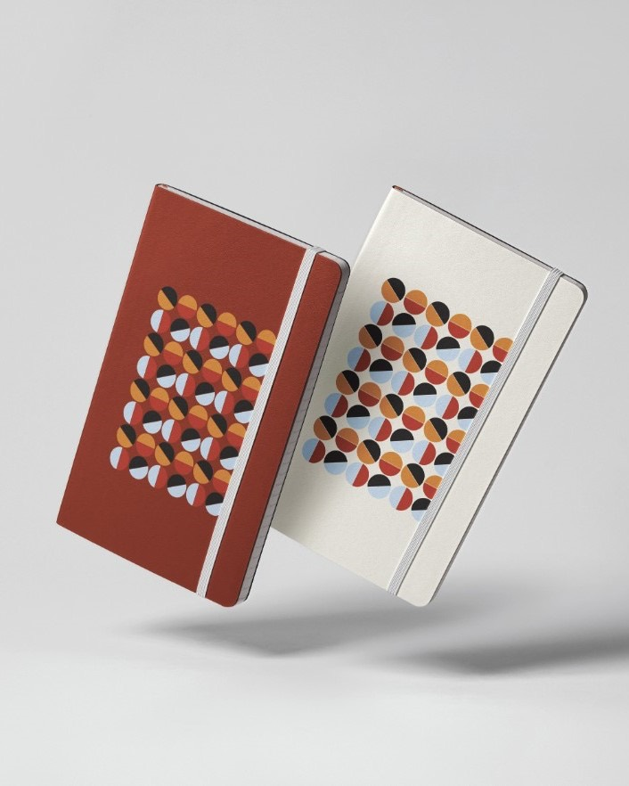
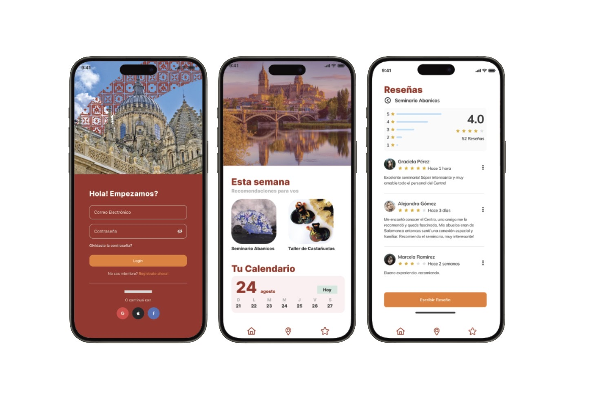
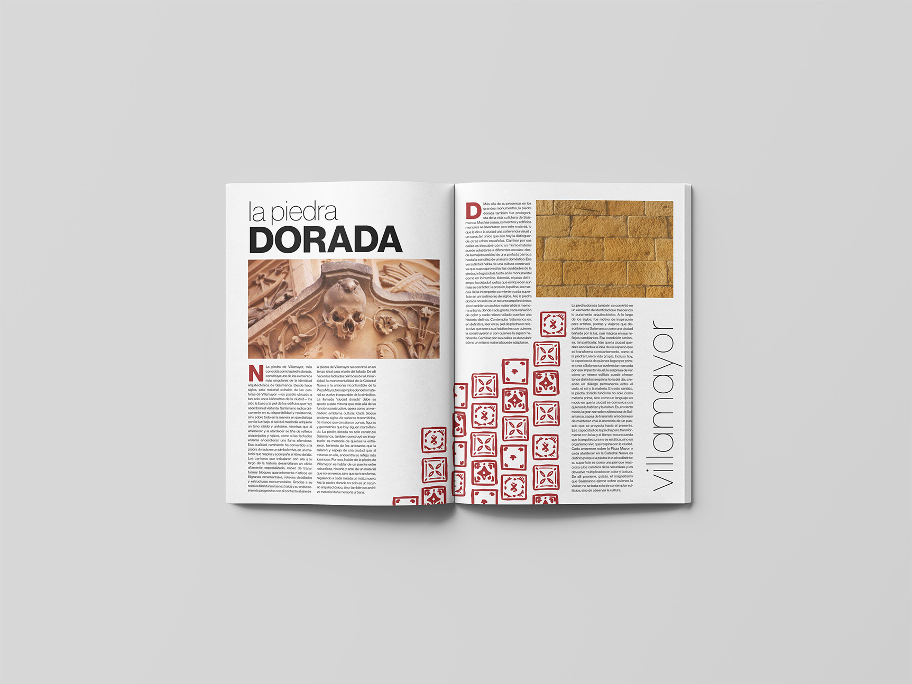
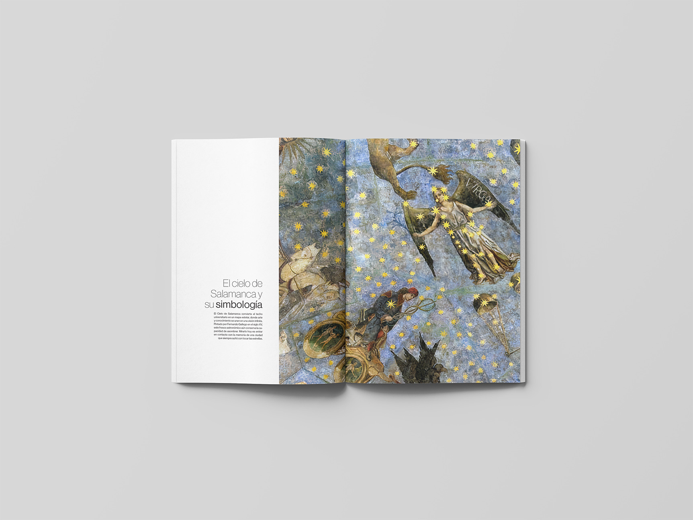
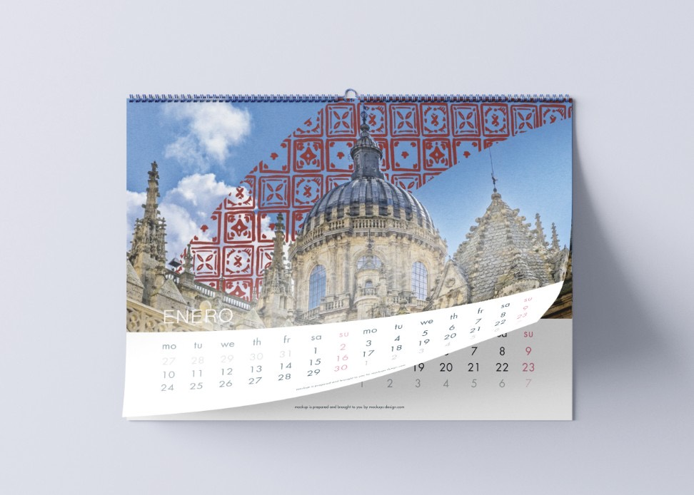
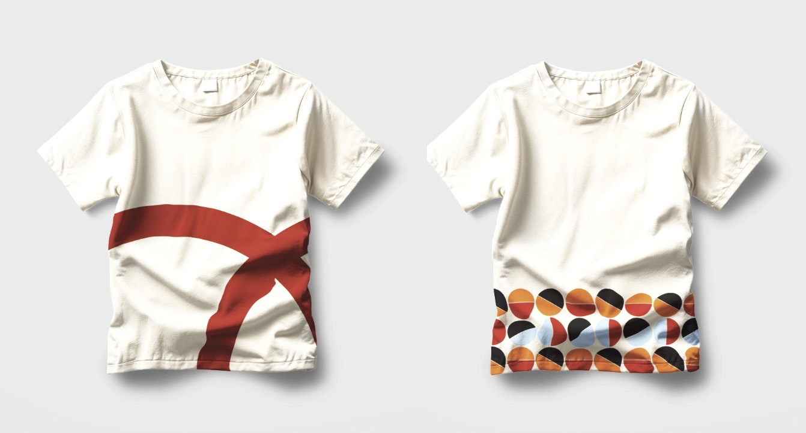

SALAMANCA
Identidad Visual

Un sistema de identidad integral pensado para vivir en múltiples soportes, desde la papelería hasta lo digital, con una sola voz.
01
Un sistema, muchos soportes
El reto fue construir un sistema lo suficientemente robusto para repetirse sin perder fuerza. La retícula y la paleta funcionan como columna vertebral.
Sobre esa base, cada aplicación —editorial, digital o de producto— aporta el carácter humano de la marca, manteniendo siempre la coherencia del conjunto.

02
Editorial


Una marca coherente es la que se reconoce en cualquier soporte.
03
Producto y cotidiano

